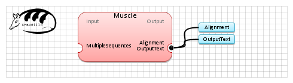

| Name | Muscle | |
| View |  | |
| Publication(s) | Edgar, R.C. (2004) MUSCLE: multiple sequence alignment with high accuracy and high throughput.Nucleic Acids Res. 32(5):1792-1797.
doi:10.1093/nar/gkh340
Edgar, R.C. (2004) MUSCLE: a multiple sequence alignment method with reduced time and space complexity BMC Bioinformatics, (5) 113.
doi:10.1186/1471-2105-5-113 | |
| Website | http://www.drive5.com/muscle/ | |
| Description | MUSCLE stands for MUltiple Sequence Comparison by Log- Expectation.
Edgar, R.C. (2004) | |
| Input (1) |
MultipleSequences | |
| Output (2) |
Alignment OutputText | |
| Keywords (1) | Sequences, Alignment | |
| Related (3) | BAli-phy ClustalW ClustalW2 | |
| Sample workflow | Muscle.properties.db |